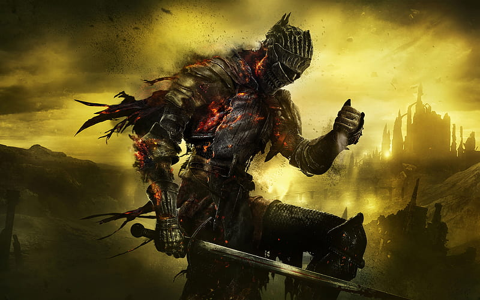

Ashen One is an Unkindled, an Undead who failed to link the First Flame and became ash, who has been raised from their grave and is tasked with a journey to defeat all of the Lords of Cinder and return them to their thrones, since the link of the Flame is threatened and the Lords refuse to serve as its fuel once.
Link ke Halaman Lain 